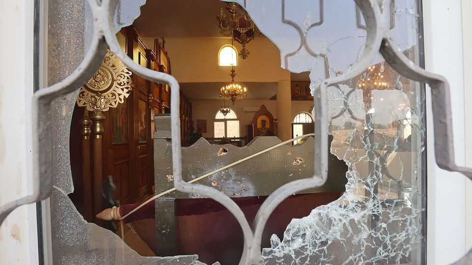
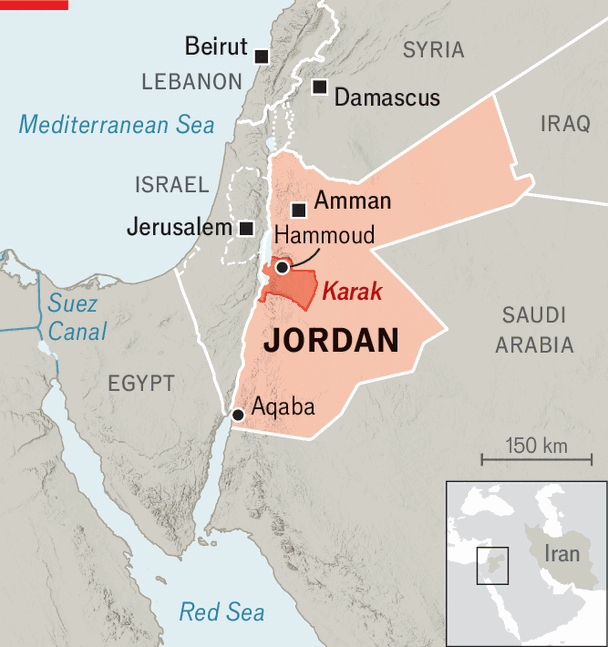

Jordan is worried about a resurgence in jihadism
The war in Iran is helping to fuel it

Nov 12th 2026
Jordan has largely escaped the violence that has ravaged the Middle East in recent years. But on October 23rd, that seemed under threat. After Friday prayers three men opened fire on a funeral procession emerging from a church in Hammoud, a village in the southern province of Karak. They pursued mourners inside, smashed windows and sprayed bullets at pews. They killed nine people and wounded dozens. The gunmen then drove home.
King Abdullah donned fatigues, visited the wounded and vowed revenge. His warplanes struck what officials said was an Islamic State hideout in southern Syria, allegedly linked to the gunmen. It was a botched attempt to deflect attention from Jordan’s failures, say Western diplomats. Meanwhile at home, Muslims were banned from congregating after prayers.

The attack on the church, coupled with the killing nearly two weeks later of a Muslim policeman guarding the Sri Lankan embassy, has raised fears of a resurgence of violent fundamentalism. Its apparent retreat across much of the region had been a rare encouraging development of late.
Officials and experts are struggling to explain the shift. Its slide into authoritarianism kept Jordan calm for years. The most recent fatal terrorist attack before October was eight years ago. Since then authorities have in effect banned protests, dissolved the largest trade union and outlawed the Muslim Brothers, Islamists who are Jordan’s biggest political movement. The once-lively press and cultural scene have withered. This summer the king revived the use of mass executions. Repression is easier than politics.
Nobody in Jordan publicly celebrated the attack on the church. Yet the gunmen appear to have counted on local sympathy. They returned to their own village, apparently in search of protection; it took the authorities three days to detain them.
Jihadism and takfir, declaring other Muslims apostates, have a local history. Anyone who supports a tyrant is deemed an infidel and thus a valid target, including the policeman at the embassy. In 2016 militants took refuge in a Crusader castle near Karak and battled security forces. At least 18 people were killed. Islamic State flags once flew farther south.
Neighbouring Syria—where a former al-Qaeda commander is president and has been feted by the White House—may provide inspiration for fundamentalism’s revival. Despite reforms, eight-year-olds are still taught about martyrdom; 16-year-olds learn about jihad, albeit led by the king. The radio on a bus to the airport was playing a sermon denouncing Jews as apes.
The war with Iran may also be playing a part. Officials emphasise its economic benefits. American military aid has increased. Disruption at ports on the Red Sea and in the Gulf has routed trade Jordan’s way. Saudi Arabia and Iraq are now more reliant on Aqaba, the kingdom’s only port. Trans-shipment traffic is up by 150% so far this year. The region’s other economies are stuttering; Jordan’s gdp is growing by nearly 3%. Muhannad Shehadeh, the deputy prime minister for economic affairs, envisages a kingdom criss-crossed by railways, digital hubs and tourism projects, reconnecting a region riven by conflict.
Many Jordanians, however, are angry about the conflict. Fuel prices have risen. Projectiles that officials dismiss as “flying objects” are landing more often. Since a ceasefire in June, Jordan has intercepted scores of Iranian salvoes.
Many Jordanians resent America’s military presence and their country’s role, as they see it, as the forward defence for Israel. Anger could soar if Iran carries out threats to hit infrastructure as well as military bases. “The war with Iran isn’t our war. We shouldn’t be part of it,” says a veteran of the Muslim Brothers.
Repression can work for a time. But forcing radicalisation underground makes it harder to detect and contain. Being the underdog, says one Islamist, makes his sort more popular. The Brothers once led vast protests against America’s regional wars. Without such outlets, argues a lawyer who represents terrorist suspects, expect public anger to take less civic forms. ■